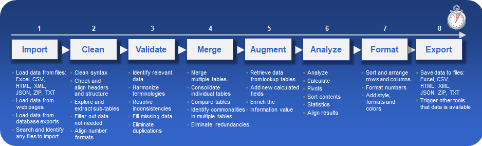

Workflow Overview - Focus on Solving Problems
Large scale data processing and analytics often follow a workflow process beginning with gathering
all input data, cleaning up and verifying them, do the actual processing task and finally save the results
in the required data formats.
